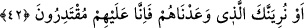

zâhir yani bilinen ve görünen huccettir ki bu peygamberdir. Biri de bâtın yani gizli
huccettir ki o da akıldır.
42. Yahut onlara vaadettiğimiz azâbı sana gösteririz. Çünkü bizim onlara
gücümüz yeter.
Onlar bizim kahır ve kudretimiz altındadır. Bizden kaçamaz ve kurtulamazlar.
Bu âyette Peygamberimiz (s.a.) tesellî edilmektedir. Allah Teâlâ, gerek Peygamber
(a.s.)’ın hayatında, gerek vefâtından sonra bir şekilde düşmanlardan intikam alacaktır.
Allah buna muktedirdir. Ya Bedir’de olduğu gibi bunu bizzat Peygamber (s.a.)
vasıtasıyla yapar. Yahut Hz. Ebûbekir ve diğer halifeler zamanında olduğu gibi,
Peygamber dışında da bu işi icrâ edebilir. Dolayısıyla Allah Teâlâ bu şekilde
Peygamber (s.a.)’i korku ile ümid arası bir makamda bulundurmuş, gayb ilmi kendi
zâtına mahsus olduğu için Peygamber (s.a.)’i câiz ve mümkinât sınırında durdurmuştur.
Bu bakımdan olayların vukuu ve neticelenmesinde herbir kişiden istenen, Allah’ın
takdirini bekleyen ve gözleyenler cümlesinden olmasıdır. Çünkü Allah, dilediğini yapar.
Mevlânâ Câmi (k.s.) şöyle der:
Ey gönül, daha ne zamana kadar fuzûlî ve acip bir şekilde
Benden kurtuluş/selamet, iyilik nişânesi isteyeceksin.
Veliler de nebiler de hayrette kaldılar:
“Bana ve size ne yapılacağını da bilmem” (el-Ahkàf, 46/9) vâdisinde.
Hadis-i şerifte şöyle buyrulmuştur: “Allah Teâlâ bir ümmete hayır murâd ettiği
zaman o ümmetten önce peygamberini vefat ettirip onu ümmete âhirette bir öncü ve
hazırlık yapar. Allah Teâlâ bir ümmete de azâb etmeyi murâd edince peygamber
henüz hayattayken onlara azâb eder ki böylece peygamberi yalanlayıp ona isyan
etmelerine karşı peygambere bir göz aydınlığı olmuş olsun.”[163]
Şöyle denilmiştir: Her peygamber ümmetine gelen belâ ve musîbetleri görmüştür.
Yalnız bizim Peygamberimiz bundan müstesnâdır. Allah ona ikram etmiş,
Peygamberimiz (s.a.) ümmetinden ancak göz aydınlığı ve memnûniyet duyacağı şeyler
görmüştür. Ümmet için takdir edilen birçok belâ ve musîbetler ise Peygamberimiz
(s.a.)’in vefâtından sonraya bırakılmıştır.
Rivâyet edildiğine göre Peygamberimiz (s.a.)’e kendisinden sonra ümmetinin başına
gelecek olan belâ ve musîbetler gösterildi. Ancak o, bütün bu gördüklerine rağmen
sevinerek ve tebessüm ederek ruhunu teslim etmiştir. Hadiste şöyle gelmiştir: “Benim
hayatım da ölümüm de sizin için hayırlıdır.”[164] Sahâbe-i kirâm: “Hayatınızın hayırlı